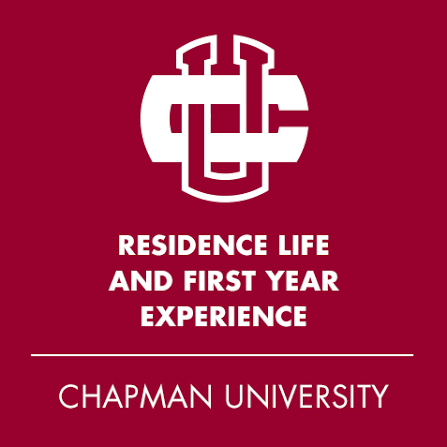
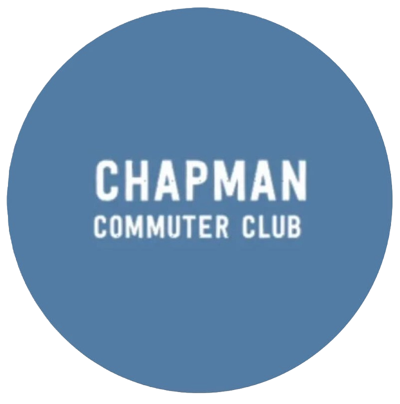

Hi, I'm Natalie Huante!
A Computer Science and Game Development student looking for opportunities to grow through hands-on learning!
View Experience View Projects↓
About Me
Hi!
I'm Natalie and I've recently graduated from Chapman University with my Masters in Computer Science. I grew up in Santa Ana, CA, as a middle child in a bilingual Mexican household, surrounded by a large (and sometimes loud) family. As a first-generation student, I have adapted to many new environments and a quick-learner. My upbringing taught me the values of hard work, dedication, and drive. In academics, athletics, personal pursuits, or relationships, I believe in giving my all. I'm also big on building strong connections, be it with partners, friends, or co-workers.
In my free time, I enjoy all sorts of hobbies, like losing myself in a good book or hitting the trails for a hike or a chill paddleboard session. I might be trying a new coffee shop on the way to a workout - recently tennis and pickleball have been my favorites. Oh, and of course my inner gaming nerd. Anyways, that's a bit about me. Let's chat soon!
Technical Skills
Programming Languages
- C++
- Python
- Java
- C#
- JavaScript
- HTML & CSS
- SQL
Testing & QA Automation
- Pytest
- Selenium
- Appium
- Squish
- Test Automation Framework Development
- Parameterized Testing
- Test Fixtures
DevOps & CI/CD
- Docker
- GitLab CI/CD
- Linux
- YAML & JSON
- Git Hooks
- Black
- Flake8
Development Tools
- Git
- GitHub
- GitLab
- Plastic SCM
- Jenkins
- Jira
- Jama
Frameworks & Technologies
- Unity
- Unreal Engine
- MySQL
- Arduino
Software Engineering Practices
- Object-Oriented Programming (OOP)
- CI/CD Workflows
- Code Reviews
- Merge Requests
- Branch Management
- Modular Software Design
- Debugging & Troubleshooting
- Scalable Test Automation
- Configuration Management
3D & Game Development
- Autodesk Maya
- Fusion 360
- 3D Printing & Design
Languages
- English (Native)
- Spanish (Fluent)
Relevant Coursework
Software Engineering
- Object-Oriented Programming
- Data Structures & Algorithms
- Algorithm Analysis
- Programming Languages
- Operating Systems
- Computer Architecture
- Computer Networks
- Database Management
- High Performance Computing
Artificial Intelligence & Data Science
- Artificial Intelligence
- Advanced Artificial Intelligence
- Statistical Machine Learning
- Text Mining & Natural Language Processing
- Time Series Analysis
Systems & Computing
- High-Performance Computing
- Human-Centered Computing
- iOS Application Development
- Computer Architecture
- Digital Logic Design
Graphics & Game Development
- Computer Graphics
- Computer Graphics & Computational Geometry
- Unity Programming
- Unreal Game Engine
- Game Development
- Collaborative Game Development
Mathematics
- Discrete Mathematics
- Linear Algebra
- Multivariable Calculus
Professional Experience
-
Software Engineering Intern (Test Automation)
Panasonic Avionics Corporation May 2025 – May 2026- Contributed to automation frameworks, test infrastructure, and CI/CD workflows supporting airline in-flight entertainment and seatback systems.
- Refactored and enhanced 100+ automation scripts while participating in 60+ code reviews to improve maintainability, scalability, and execution reliability across multiple airline frameworks.
- Collaborated in an Agile development environment using Git and GitLab workflows for version control, code integration, and subtree/submodule management across 6+ shared repositories.
-
Office Administrative Assistant
Stage Plus Inc. August 2015 - June 2025- Supported day-to-day business operations by assisting with administrative tasks, filing systems, payroll processing, employee records, and internal communications.
- Maintained organized documentation and assisted with operational processes to support a small business team.
-
Graduate Student Instructor
Fowler School of Engineering, Chapman University August 2024 - January 2026- Guided 90+ students across four course sections in developing foundational Python programming skills through lectures, assignments, and hands-on instruction.
- Mentored students in applying critical thinking and problem-solving techniques to programming concepts while fostering an engaging learning environment.
- Collaborated with faculty to align course content, instructional materials, and grading standards across multiple course sections.
-
Graduate Teaching Assistant
Fowler School of Engineering, Chapman University August 2025 - January 2026- Provided individualized support to 20+ students through office hours, answering questions and reinforcing programming concepts.
- Delivered detailed, constructive feedback on assignments, quizzes, and exams to support student learning and academic growth.
- Maintained an accurate and organized gradebook while grading coursework and assisting the instructor with course administration.
-
Summer Engineering Academy Student Employee
Fowler School of Engineering, Chapman University June 2024 - August 2024- Designed and developed a custom Unity-based level editor to support hands-on learning of foundational game development concepts.
- Created instructional materials, workshop resources, and a project showcase video to enhance student engagement and highlight completed projects.
- Mentored students through Unity development exercises by providing technical guidance, troubleshooting support, and constructive feedback.
- Coordinated workshop resources and logistics to ensure an organized and engaging learning experience.
-
Peer Advisor
Fowler School of Engineering, Chapman University August 2022- May 2024- Advised engineering students on course planning, registration, graduation requirements, and degree progress while helping them navigate university policies and academic resources.
- Collaborated with professional academic advisors during advising appointments and served as a liaison between students and the Fowler School of Engineering advising team.
- Supported students in developing organized academic plans and making informed decisions throughout their undergraduate experience.
-
Agora Gift Shop Team Member
Follett July 2021 – August 2022- Provided friendly and efficient customer service while assisting with daily retail operations and administrative tasks on the sales floor and in the stockroom.
- Maintained an organized inventory and workspace to support efficient store operations and a positive customer experience.
- Assisted in onboarding and training new team members on store procedures and customer service expectations.
Leadership & Campus Involvement
-
DEIAB Committee Co-Chair
Tri Delta, Epsilon Nu Chapter May 2023 - May 2024- Co-led diversity, equity, inclusion, accessibility, and belonging (DEIAB) initiatives to foster an inclusive and welcoming chapter environment.
- Developed and facilitated educational programming through newsletters, trainings, events, and chapter-wide discussions.
- Helped ensure chapter activities aligned with organizational values, policies, and standards while promoting accountability and respectful community engagement.
-
Rho Gamma Recruitment Counselor
Chapman Panhellenic January 2024- Mentored and guided potential new members throughout the Panhellenic recruitment process by providing individualized support and unbiased guidance.
- Facilitated small-group discussions, addressed questions and concerns, and fostered a welcoming and supportive recruitment experience.
- Assisted with recruitment logistics, administrative responsibilities, and communication between recruitment staff and participants.
-
Vice President of Operations
Tri Delta, Epsilon Nu Chapter March 2022 - April 2023- Managed chapter operations, member finances, and a budget exceeding $100,000, supporting the day-to-day operations of 100+ members and 19+ officers.
- Led the Operations Team while serving on the Executive Committee, coordinating officer onboarding, leadership transitions, and chapter-wide operational initiatives.
- Partnered with chapter leadership and national organization representatives to coordinate logistics, allocate resources, and support large-scale chapter operations and events.
-

Orientation Leader
Residence Life & First Year Experience, Chapman University August 2021 - August 2023- Facilitated orientation groups of 30–60 incoming students through discussions, activities, and campus events to support their transition to university life.
- Served as a primary resource for students and families by providing guidance, answering questions, and fostering a welcoming and inclusive orientation experience.
- Collaborated with the Orientation Team to coordinate programming, communicate important information, and ensure the successful execution of orientation events.
-

Vice President & Secretary
Chapman Commuter Club August 2021 - May 2022- Served as Vice President and Secretary for 2 consecutive semesters, co-leading 10+ club meetings and initiatives to foster engagement within Chapman University's commuter student community.
- Managed organizational communications through email, social media, and university channels to promote events and keep members informed.
- Maintained meeting records, organized administrative documentation, and collaborated with university offices to support successful club operations.
Education
-

Master of Science in Computer Science & Electrical Engineering
Chapman University May 2026- Graduated with a 3.97 GPA.
- Focused on artificial intelligence, machine learning, and high-performance computing.
-
Bachelor of Science in Computer Science
Chapman University May 2024- Minor in Game Development Programming
- GPA: 3.826 • Magna Cum Laude
- Honors: Provost's List (2021–2024)
- Leadership: Fowler School of Engineering Peer Advisor & Tri Delta DEIAB Committee Co-Chair
-

High School Diploma
Foothill High School, Tustin Unified School District May 2020- Academic GPA: 4.73 • Graduated in the Top 5% of a class of 620 students
- Completed and passed 8 Advanced Placement (AP) courses • SAT: 1430
- Awarded the California State Seal of Biliteracy and Golden State Seal Merit Diploma
- Captain, Varsity Girls Tennis Team
Projects
In The Pipes
Jump, crawl, or swing through the sewers as you try to avoid enemies, collect, coins, and escape before the tidal wave wiped you out! After getting washed out of your home in the pipes, you will encounter rats, snakes, crocs, and other dangers before making it back out. In the Pipes began as a solo, Unity project of mine and developed into a team effort towards its submission for IEEE in April 2024 and ultimately won the Most Marketable Game award.

Voting Systems Simulation
This projects simulates three types of voting systems given some parameters (the set of candidates, voter distribution, etc.) and analyzes the differences in voter satisfaction based on the result of the election. This project was build collaboratively on a team of four and primarily written in Java.
View Project GithubApocalypse
Apocalypse was one of my first projects and is an environment scene in which I played with 3D modeling in Maya, texturing, sounds triggers, animations, particle effects, and other Unity functions. As you explore the map and enjoy the eery vibe of the land, you might make some odd discoveries that may hint as to what has happened to the people who live there. My contributions: map design, 3d modeling and texturing of the tower/crates/buildings, map terrain, and integration and placement of all items. Solo project, built in Unity.

Bird-Aircraft Collision Statistical Analysis
This report discusses and analyses bird strikes to build a deeper understanding of how often they occur, what factors might be influential, etc. Includes frequentist and bayesian approaches, EDA, causal inference, and more.
View Project Github View Report View Presentation
Health Blocks
This project aims to provide an accessible and user-friendly program for users to look up nutritional information on their meals. My team and I used both the Blockly API and the Nutritionix API as the foundation for the program and implemented a domain-specific language that will provide users with a more customized experience. The report includes my analysis and reflection on the development of the project among other components of the Programming Languages course.
View Project Github View Report
S.P.O.T - The Smarter Way to Trash
A device that scans your disposables and filters them to the corresponding bins. Intended for areas with high foot traffic where companies will benefit from sorting waste at-source.
View PresentationRoll A Ball
This solo project stars an asteroid in space that must navigate obstacles and collect the nearby stars to win. This game requires coordination from the player as they must navigate moving obstacles and enemy shooters. Built in Unity. My contributions include all game mechanics such as ball movement, enemy shooters, level design, UI, etc.
View ProjectNeon Mirage
This collaborative class project, built in Unity C#, is a spinoff of the classic Breakout arcade game. My own contributions consisted of Object Pooling, Brick Development, Art Integration and Debugging.
View ProjectShipwrecked!
Shipwrecked is a solo class project built in Unreal where the player must race against the clock as they navigate through a maze after being shipwrecked on an unfamiliar island. Some of the key components and lessons from this project were working with blueprints, widgets, cinematics, and collision.
Sandy VS Squirrels
This project is a 2d game where you can play as Sandy the Corgi and defeat the enemy squirrels in your yard to win! Make sure to dodge the acorns they will launch at you and to knock them out with your ammo. My role consisted of all the programming such as squirrel behavior, corgi movement, level management, integration of art and sounds, scene management.
Contact
I would love to hear from you! Feel free to reach out through any of the following channels: